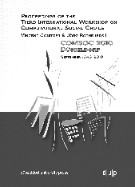

|
|
|
Proceedings
Proceedings were not published formally but were distributed as a bound
volume:
Vincent Conitzer and Jörg Rothe (editors).
Proceedings of the Third International Workshop on Computational Social
Choice
(COMSOC-2010), printed by Düsseldorf University Press, September 2010.
Available as a PDF file.

Individual papers may also be accessed directly via the program page.
The copyright for all papers lies with the individual authors.
The accepted papers are:
- Sven O. Krumke and Clemens Thielen. Strong Implementation of Social Choice Functions in Dominant Strategies
- Clemens Thielen and Stephan Westphal. A Combinatorial Algorithm for Strong Implementation of Social Choice Functions
- Yiling Chen, John K. Lai, David C. Parkes, and Ariel D. Procaccia. Truth,
Justice, and Cake Cutting
- Ceyhun Coban and M. Remzi Sanver. Social Choice without the Pareto
Principle under Weak Independence
- Edith Elkind, Piotr Faliszewski, and Arkadii Slinko. Distance
Rationalization of Voting Rules
- Nadja Betzler. On Problem Kernels for Possible Winner Determination
Under the k-Approval Protocol
- Felix Brandt, Markus Brill, Edith Hemaspaandra, and Lane A.
Hemaspaandra. Bypassing Combinatorial Protections: Polynomial-Time
Algorithms for Single-Peaked Electorates
- Noga Alon, Felix Fischer, Ariel D. Procaccia, and Moshe Tennenholtz. Sum
of Us: Strategyproof Selection from the Selectors
- Michael Zuckerman, Omer Lev, and Jeffrey S. Rosenschein. An Algorithm for the
Coalitional Manipulation Problem under Maximin
- Mirco Gelain, Maria Silvia Pini, Francesca Rossi, Kristen Brent
Venable, and Toby Walsh. Local Search for Stable Marriage Problems
- Davide Grossi and Paolo Turrini. Dependence in Games and Dependence Games
- Ning Chen and Arpita Ghosh. Algorithms for Pareto Stable Assignment
- Maria Silvia Pini, Francesca Rossi, Kristen Brent Venable, and Toby
Walsh. Stable Marriage Problems with Quantitative Preferences
- Ronald L. Rivest and Emily Shen. An Optimal Single-Winner Preferential
Voting System Based on Game Theory
- Reshef Meir, Maria Polukarov, Jeffrey S. Rosenschein, and Nicholas R.
Jennings. Convergence to Equilibria in Plurality Voting
- Victor Naroditskiy, Maria Polukarov, and Nicholas R. Jennings. Optimization in Payments in Dominant Strategy Mechanisms for
Single-Parameter Domains
- Haris Aziz, Felix Brandt, and Hans Georg Seedig. Optimal Partitions in
Additively Separable Hedonic Games
- Yonatan Aumann and Yair Dombb. The Efficiency of Fair Division with
Connected Pieces
- Sylvain Bouveret, Ulle Endriss, and Jérôme Lang. Fair Division under
Ordinal Preferences: Computing Envy-Free Allocations of Indivisible Goods
- Noam Hazon and Edith Elkind. Complexity of Safe Strategic Voting
- Andreas Darmann, Christian Klamler, and Ulrich Pferschy. A Maximin
Approach to Finding Fair Spanning Trees
- Felix Brandt. Group-Strategyproof Irresolute Social Choice Functions
- Felix Brandt, Markus Brill, and Hans Georg Seedig. On the
Fixed-Parameter Tractability of Composition-Consistent Tournament
Solutions
- Ulle Endriss, Umberto Grandi, and Daniele Porello. Complexity of Winner
Determination and Strategic Manipulation in Judgment Aggregation
- Ilan Nehama. Approximate Judgement Aggregation
- Toby Walsh. Online Cake Cutting
- Koji Takamiya. Complexity Consideration on the Existence of
Strategy-Proof Social Choice Functions
- Tatyana Gvozdeva, Lane A. Hemaspaandra, and Arkadii Slinko. Three
Hierarchies of Simple Games Parameterized by "Resource'' Parameters
- Arkadii Slinko, Piotr Faliszewski, and Edith Elkind. Cloning in Elections
- Péter Biró and Tamás Fleiner. Fractional solutions for NTU-games
- Tyler Lu and Craig Boutilier. Budgeted Social Choice: A Framework for
Multiple Recommendations in Consensus Decision Making
- Nadja Betzler, Robert Bredereck, and Rolf Niedermeier. Partial Kernelization for Rank Aggregation: Theory and Experiments
- Britta Dorn and Ildikó Schlotter. Multivariate Complexity Analysis of
Swap Bribery
- Ioannis Caragiannis, Dimitris Kalaitzis, and Evangelos Markakis.
Approximation Algorithms and Mechanism Design for Minimax Approval Voting
- Lirong Xia, Jérôme Lang, and Jérôme Monnot. Possible Winners When New
Alternatives Join: New Results Coming Up!
- Ioannis Caragiannis, Christos Kaklamanis, Nikos Karanikolas, and Ariel D.
Procaccia. Socially Desirable Approximations for Dodgson's Voting Rule
- Mark C. Wilson and Reyhaneh Reyhani. The Probability of Safe Manipulation
- Gábor Erdélyi and Michael Fellows. Parameterized Control Complexity in
Bucklin Voting and in Fallback Voting
- Jessica Davies, George Katsirelos, Nina Narodytska, and Toby Walsh. An
Empirical Study of Borda Manipulation
In addition, the following papers have been accepted for presentation in a
special LogICCC session at the LogICCC Tutorial Day (right after the
tutorials):
- Rudolf Berghammer and Stefan Bolus. Problem Solving on Simple Games
via BDDs
- José Luis García-Lapresta and David Pérez-Román. Consensus Measures Generated by Weighted Kemeny Distances on Linear Orders
- Sara L. Uckelman and Joel Uckelman. Strategy and Manipulation in
Medieval Elections
|
{kind=link}